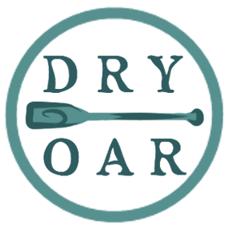

Overview
Purpose
This website purpose is to make it easier for people to discover, and enjoy the services that our company has to offer.
We are aiming to offer a vast and educative experience for everyone to appreciate, ranging from rafting to teaching the visitors about the environment they are exploring. Part of the profits from this project are going to be used to improve the environmental preservation of the place, thus ensuring that they will have an extraordinary and memorable experience.
Audience
Our target audience is going to be teens and adults, so in our site we are going to need eye-cathing photos like landscapes at diferent times of the day and our interesting activities to attract their curiosity and make them want to know the place. An easy layout for navigation and a dedicated place showing prices and making discount offers for groups of people is also going to facillitate and encourage them to try our services.
Branding
Website Logo
Style Guide
Color Palette
Palette URL:
https://coolors.co/2e5c60-438889-80d8d6-ffffff| Primary | Secondary | Accent 1 | Accent 2 |
|---|---|---|---|
| #2E5C60 | #438889 | #80D8D6 | #ffffff |
Typography
Heading Font: Cinzel
Paragraph Font: Roboto Slab
Normal paragraph example
The best Whitewater Rafting in Colorado, White Water Rafting Company offers rafting on the Colorado and Roaring Fork Rivers in Glenwood Springs. Since 1974, we have been family owned and operated, rafting the Shoshone section of Glenwood Canyon and beyond.
Colored paragraph example
Trips vary from mild and great for families, to trips exclusively for physically fit and experienced rafters. No matter what type of river adventures you are seeking, White Water Rafting Company can make it happen for you.
Navigation
Site Map
Wireframes
Home